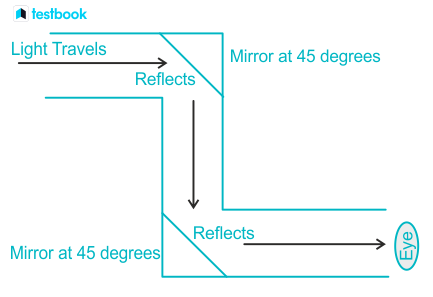

PERISCOPE
(Light, Shadows and Reflection)
Academic Information
Class: 6
Book Name: Science
Chapter No: 8
Chapter: Light, Shadows and Reflection
Learning Objectives
- Explore the properties of plane mirrors and their ability to reflect light without distortion.
- Learn about the laws of reflection and how mirrors reflect and redirect light.
- Understand how periscope mirror configurations change the line of sight for concealed observation.
- Appreciate periscope applications in real-world scenarios like military operations.
Science Involved
- Periscopes rely on the reflection of light rays from mirrors.
- The laws of reflection state that the angle of incidence equals the angle of reflection, guiding light behavior in a periscope.
- The arrangement of mirrors involves specific angles that determine the direction of reflected light, crucial for designing the periscope's optical path.
Participate & Observe
- A simple periscope uses two flat mirrors placed at 45-degree angles.
- Light from a distant object strikes the top mirror at a 45-degree angle, reflecting straight down the periscope tube.
- The bottom mirror reflects the light horizontally toward the eye, allowing the viewer to see the object through the eyepiece.
Applications
- Military: Used in submarines and armored vehicles for concealed observation.
- Underwater Exploration: Enables safe observation underwater.
- Construction and Industrial Inspection: Provides access to hard-to-reach areas.
- Entertainment: Used in amusement parks and aquariums for unique viewing experiences.
- Surveillance: Employed by law enforcement for covert operations.
Animated Video
Image Gallery

